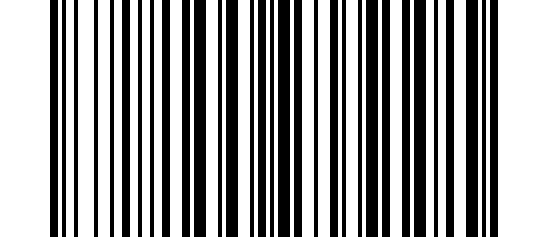
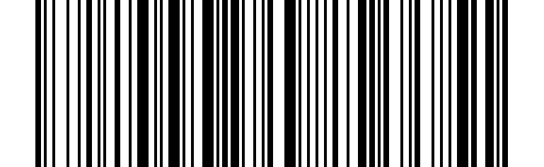

Mode de travail#
Dans la zone de travail en dehors de la portée de la 2. Récepteur G ou signal Bluetooth, vous pouvez activer le mode de stockage du scanner en suivant les étapes décrites ci-dessous. Dans ce mode, toutes les données numérisées seront stockées directement dans le scanner. Avant de télécharger les données, il sera sauvegardé en permanence dans le scanner afin que vous puissiez télécharger les données lorsque le scanner est dans la plage de signal de réception.
Mode Normal#

* Mode Normal#
Note
Régler en mode normal, et les données seront téléchargées immédiatement après la numérisation.
Mode de stockage#
{kind=link}
Mode de stockage#
Note
Définissez le mode de stockage. Après une analyse réussie, les données ne seront pas envoyées immédiatement, mais seront stockées dans le scanner.
Envoi de données[1]#
{kind=link}

Envoi de données#
Note
Télécharger les données stockées dans le scanner.
Quantité totale de stockage#
{kind=link}
Quantité totale de stockage#
Note
Vérifiez combien de données sont stockées.
Vider le code-barres stocké#
{kind=link}
Vider le code-barres stocké#
Note
Effacer les données stockées dans le scanner.
Désactiver le mode de stockage automatique#
{kind=link}

Désactiver le mode de stockage automatique#
Activer le mode de stockage automatique[2]#
{kind=link}
Activer le mode de stockage automatique#